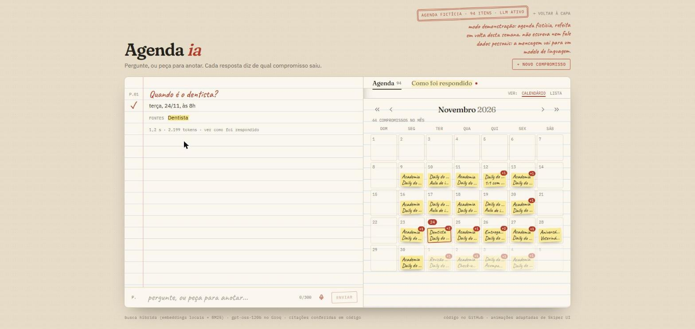
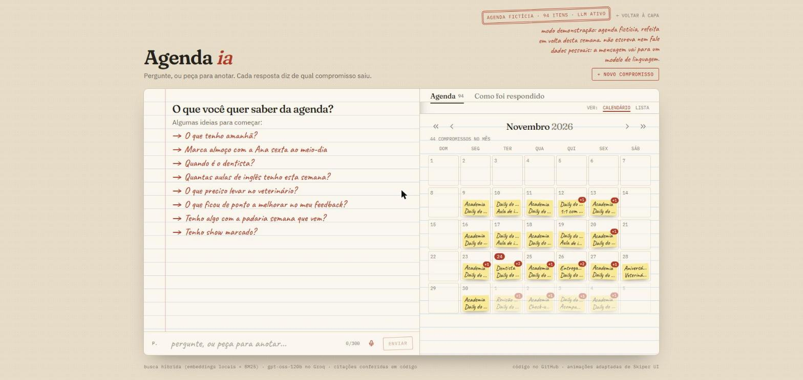

// 1 · avatar
Os três usam a mesma cabeça, agora esculpida em código com nariz, órbitas, maçãs do rosto e queixo. Mexa o mouse: todos acompanham. Quando você gerar o seu modelo (selfie → GLB), o mesmo tratamento vale para o seu rosto de verdade.
Busto liso em argila clara, de moletom escuro com o cordão no verde do site. Olhos com íris, piscando. Parece peça de galeria e não tenta imitar pele.
com o seu GLB: o seu rosto, no mesmo acabamento de argila.
A cabeça vira uma nuvem de pontos, mais claros na frente, com uma linha de varredura subindo como num scanner 3D. Combina com o tom de engenharia.
com o seu GLB: pontos tirados da superfície do seu rosto, um "scan" seu.
Fatias horizontais da cabeça, como num mapa topográfico, em verde. É o mais leve dos três e o mais gráfico.
com o seu GLB: as curvas seguem o seu perfil.
// 2 · projetos que convidam a testar
Hoje cada projeto tem o diagrama e um link. Estas opções somam a cara real do projeto e um convite para usar. Dá para combinar: por exemplo, a janela ao vivo no agenda-ia, a mini-demo no TicketFlow e a vitrine no Sinal.
A captura real dentro de uma janela de navegador. Ao passar o mouse, aparece o convite; ao clicar, a própria demo abre ali dentro, sem sair do portfólio.

Uma versão de brinquedo do problema que o projeto resolve, jogável na própria página. Aqui: compre ingressos e depois faça a Stripe reenviar o webhook. Mostra a ideia do TicketFlow em 10 segundos, sem precisar de servidor.
// log · clique em comprar
A captura entra inclinada e se endireita com o scroll; depois a tela de "antes" vira a de "depois". Conta a história do projeto em imagens, sem precisar clicar.
a agenda com os compromissos da semana
alguém pergunta "Quando é o dentista?"
a resposta aponta o post-it de onde saiu

// 3 · mais ideias
"abrir agenda-ia", "ir para contato", "copiar link do GitHub". Combina com o tom de terminal e faz quem é dev querer explorar.
Um clique no projeto leva a uma página própria: o problema, as decisões e o porquê, o que deu errado, números (213 testes, 2 chamadas ao modelo por pergunta) e próximos passos.
Uma linha no topo com o último commit público: "há 2 h · refactor: organizar o back em pastas". Mostra que o portfólio está vivo.
Ipem-SP, estágio e efetivação na Class Solutions e FIAP numa linha que se desenha com o scroll, no mesmo estilo dos diagramas.
Uma chave no topo. Abre portas para vagas remotas de fora e mostra o seu inglês por escrito.
O ambiente 3D da mesa como uma página extra ("explorar em 3D"), sem mudar o site principal.